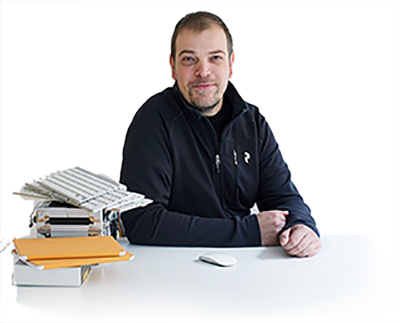
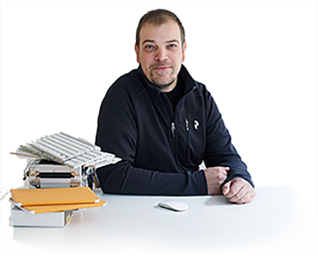

you are not you with out epson
min länk till fb
 E-post
per.ekstrom@beckmans.se
Telefonnummer
08-6602020
Adress
Sickla Sjöväg 3
13133.
E-post
per.ekstrom@beckmans.se
Telefonnummer
08-6602020
Adress
Sickla Sjöväg 3
13133.
Ekström begav sig till Paris våren 1876, då han med Oscar II:s understöd företog sin första studieresa söderut. Ekström levde i Frankrike till 1890, delvis i och omkring Paris (inkluderat Barbizon och Saint-Germain)[förtydliga], delvis i Carolles, Normandie. Han blev genast en beundrare av Barbizonskolans mästare och framför allt av Corot, "den störste bland de stora" som han omnämner honom i ett brev till Olof Hermelin. Det upplösta valörmåleriet och silverdiset från Corots tavlor inspirerade Ekströms syn på naturen. I sina dukar från Frankrike skildrar han med lyrisk känsla landskapets stämning, ljusets spel i lövmassorna, färgskimret över ängar och vatten. Lyrismen stegras stundom till en romantisk[förtydliga] styrka såsom i "Kustlandskap i månsken" från 1877. Under 80-talet fortsätter han mest i samma lyriska stil.
källa: wikipedia